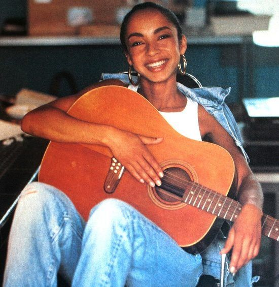
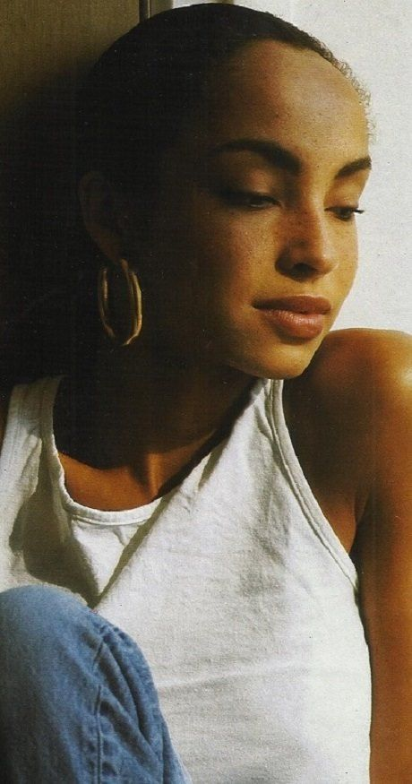
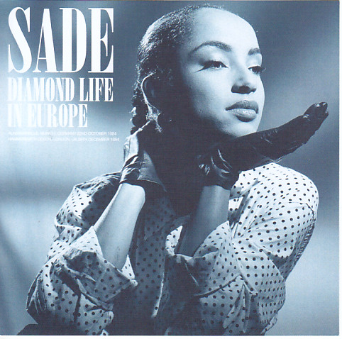
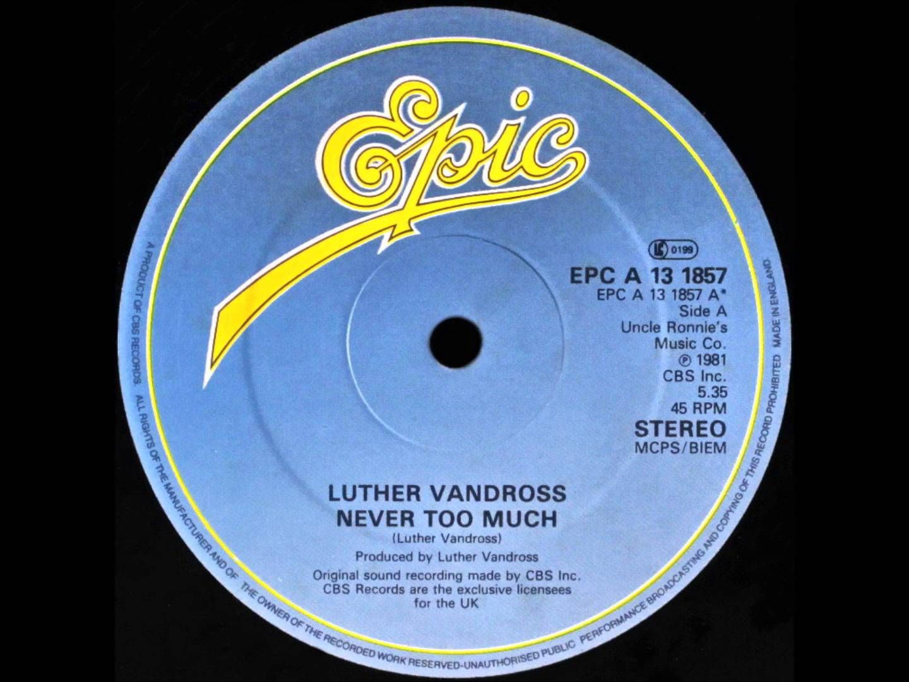
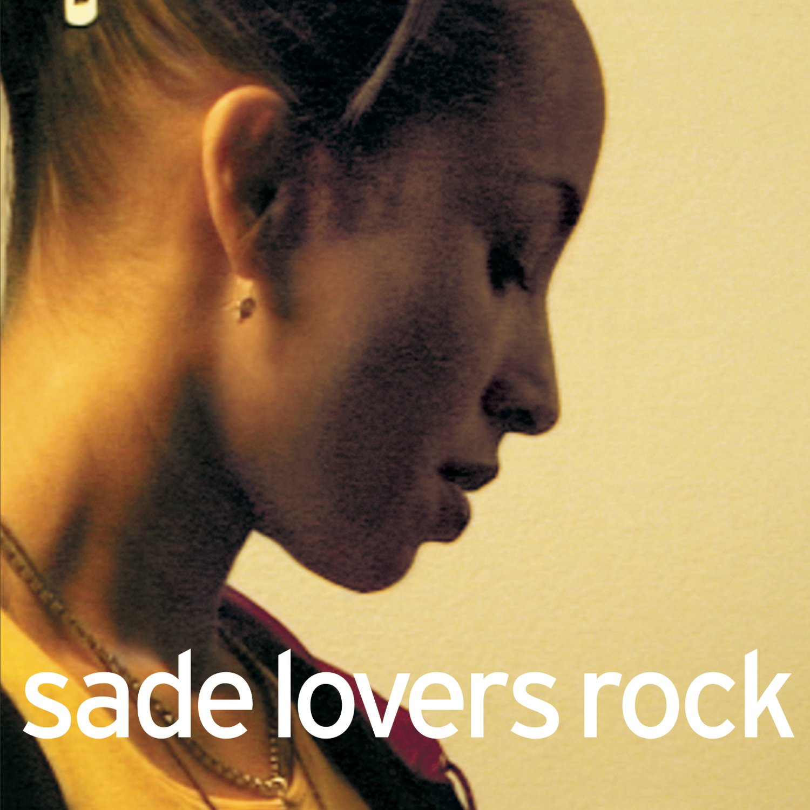
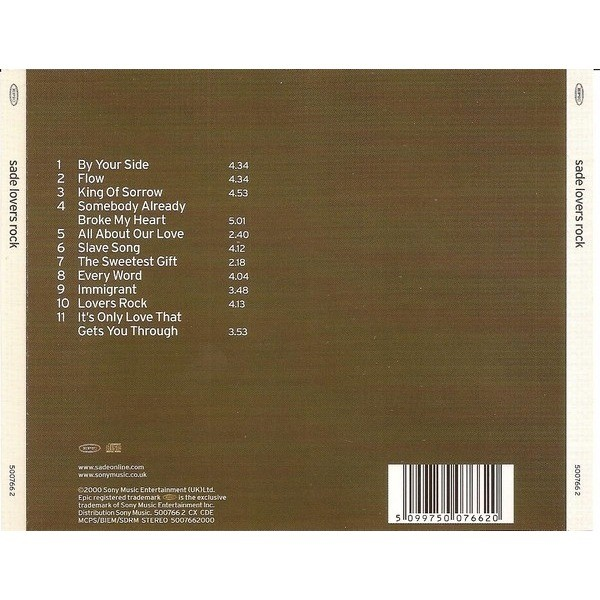
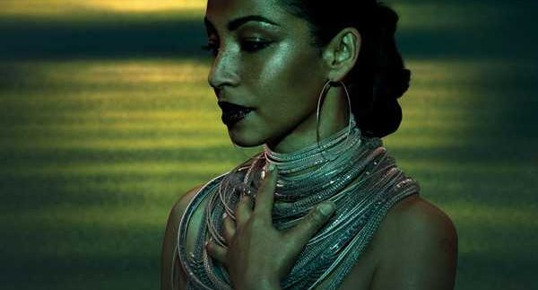

Sade
AN OVERVIEW OF HER CAREER
Helen Folasade Adu CBE (born January 16, 1959), known professionally as Sade Adu or simply Sade (/deɪ/ shah-DAY), is a British singer, songwriter, and actress, known as the lead singer of her eponymous band.
EARLY LIFE
Helen Folasade Adu was born on 16 January 1959 in Ibadan, Oyo State, Nigeria. Her middle name, Folasade, means "honour confers a crown". Her parents are Adebisi Adu, a Nigerian lecturer in economics of Yoruba background, and Anne Hayes, an English district nurse; they met in London, married in 1955, and moved to Nigeria.[9] When Sade was four years old, her parents separated. Anne Hayes then returned to England, taking Sade and older brother Banji with her to live with their grandparents near Colchester, Essex. When Sade was 11 years old, she moved to Holland-on-Sea, Essex, to live with her mother. After completing her education at Clacton County High School and Colchester Institute at age 18, she moved to London and studied fashion design at Saint Martin's School of Art.


CAREER
1980–1984: Beginnings and Diamond Life
After completing a three-year course work in fashion design, and later modeling briefly, Sade began backup singing with British band Pride. During this time, she formed a songwriting partnership with Pride's guitarist/saxophonist Stuart Matthewman; together, backed by Pride's rhythm section, they began doing their own sets at Pride gigs.[15] Her solo performances of the song "Smooth Operator" attracted the attention of record companies, and in 1983 Sade and Matthewman split from Pride, along with keyboardist Andrew Hale, bassist Paul Denman and drummer Paul Cook, to form the band Sade.[9][15] By the time she performed her first show at London's Heaven nightclub, she had become so popular that 1,000 people were turned away at the door. In May 1983, Sade performed their first US show at the Danceteria nightclub in New York City. On 18 October 1983, Sade Adu signed with Epic Records, while the rest of the band signed in 1984.
Following the record deal, the group began recording their debut album, Diamond Life, which took six weeks to record and was recorded entirely at The Power Plant in London.[17] Diamond Life was released on 16 July 1984, reached number two in the UK Album Chart, sold over 1.2 million copies in the UK, and won the Brit Award for Best British Album in 1985.[18] The album was also a hit internationally, reaching number one in several countries and the top ten in the US, where it has sold in excess of four million copies. Diamond Life had international sales of over six million copies, becoming one of the top-selling debut recordings of the '80s, and the best-selling debut ever by a British female vocalist.
"Your Love Is King" was released as the album's lead single on 25 February 1984 and was a success in European territories, charting at number seven in Ireland and number six on the UK Singles Chart.[19][20] The song was less successful in the US, where it peaked at number 54 on the US Billboard Hot 100.[21] The third single, "Smooth Operator", was released on 15 September 1984 and became the most successful song in the US from the album Diamond Life. The track peaked at number five on the US Billboard Hot 100 and the US Billboard Hot Black Singles, as well as peaking at number one on the US Billboard Adult Contemporary chart.[22] In Europe the song fared well, peaking at number 19 in the UK,[23] and reaching the top 20 in Austria, Switzerland, France, and Germany.


1985–2000: Continued success and first hiatus
In late 1985, the band released their second album, Promise, which peaked at number one in both the UK and the US[25][26] and became the band's first album to reach number one on the US Billboard 200. The album topped the chart in 1986 and spent two weeks at the peak position.[27] Eventually, the album went on to sell four million copies in the region and was certified four times platinum by the Recording Industry Association of America (RIAA).[28] The album spawned two singles "Never as Good as the First Time" and "The Sweetest Taboo," the latter of which was released as the album's lead single and stayed on the US Hot 100 for six months.[29] "The Sweetest Taboo" peaked at number five on the US Billboard Hot 100, number one on the US adult Contemporary chart, and number three on the US Hot R&B/Hip-Hop Singles & Tracks.[30] Sade was so popular that some radio stations reinstated the '70s practice of playing album tracks, adding "Is It a Crime" and "Tar Baby" to their playlists.[29] The following year, 1986, the band won a Grammy Award for Best New Artist.
In 1986, Sade made her acting debut in Absolute Beginners, a film adapted from the Colin MacInnes book of the same name about life in late-1950s London. Sade played the role of Athene Duncannon and lent her vocals to the film's accompanying soundtrack.[32] The film was screened out of competition at the 1986 Cannes Film Festival and grossed £1.8 million in the UK.[33] Sade's third album, Stronger Than Pride, was released on 3 May 1988, and like Sade's previous album became a commercial success and certified three times platinum in the US.[28] The album was popularized by four singles, most notably the album's second single "Paradise", which peaked at number 16 on the US Billboard Hot 100 and peaked at number one on the US Billboard Hot R&B/Hip-Hop Songs, becoming the band's first single to do so.
Love Deluxe was released as the band's fourth studio album on 26 October 1992. The album peaked at number three on the US Billboard 200[35] and has sold 3.4 million copies in the United States.[36] The album was later certified four times platinum by the RIAA for shipments of four million copies.[37] The album was also commercially successful elsewhere, reaching number-one in France,[38] and reaching the top ten in New Zealand,[39] Sweden,[40] Switzerland,[41] and the UK.[42] The album went on to be certified gold in the United Kingdom. In November 1994, the group released their first compilation album, The Best of Sade. The album was another top ten hit in both the United Kingdom and the United States,[43] certified platinum and four times platinum, respectively.[44] The compilation album included material from Sade's previous albums, as well as a cover version of "Please Send Me Someone to Love" (1950), originally by Percy Mayfield.
2000–2010: Lovers Rock and second hiatus
Following an eight-year hiatus, the band released their fifth studio album, Lovers Rock, on 13 November 2000 and received positive reviews from music critics.[46] The album reached number 18 on the UK Albums Chart, number three on the US Billboard 200, and has since been certified triple platinum by the Recording Industry Association of America (RIAA),[47] having sold 3.9 million copies in the United States by February 2010.[48] On 27 February 2002, the album earned Sade the Grammy Award for Best Pop Vocal Album,[49] and the lead single "By Your Side" was nominated for the 2002 Grammy Award for Best Female Pop Vocal Performance. Although the single lost out to Nelly Furtado's "I'm Like a Bird", it has been listed as the 48th greatest love song of all time by VH1.
To promote the album, Sade and the band embarked on their fifth concert tour entitled Lovers Rock Tour. The tour was announced via the band's website in April 2001.[51] The announcement stated the tour would begin in the summer of 2001 with 30 shows. Initial dates were rescheduled due to extended rehearsal time. The shows sold well, with many stops adding additional shows. In August 2001, the tour was extended by eight weeks due to ticket demand.[52] Deemed by many critics as a comeback tour, it marked the band's first performances since 1994 and took place in 2001. Although many believed the trek would expand to other countries, this did not occur. With over 40 shows, it became the 13th biggest tour in North America, earning over 26 million.
Following the tour, the band released their first live album, Lovers Live on 5 February 2002 by Epic Records. Lovers Live reached number ten on the US Billboard 200 and number 51 on the UK Albums Chart, the band's first album to miss the top twenty in the UK. The album was certified gold by the RIAA on 7 March 2002, having reached US sales of 562,000 copies,[54] while the DVD was certified platinum on 30 January 2003 for shipping 100,000 copies.
Following the release of Lovers Rock, Sade took a ten-year hiatus, during which she raised her son and moved to the Caribbean. During this time, she made a rare public appearance for an award ceremony that took place in 2002 to accept an Order of the British Empire (OBE) at Buckingham Palace for services to music.[55] In 2002, she appeared on the Red Hot Organization album, Red Hot + Riot, a compilation CD in tribute to the music of fellow Nigerian musician, Fela Kuti. She recorded a remix of her hit single "By Your Side" for the album and was billed as a co-producer.


2010–present: Soldier of Love, third hiatus and return
The band's sixth studio album, Soldier of Love, was released worldwide on 8 February 2010 and was the most recent album in ten years to contain new material.[12] Upon release, the album received positive reviews and became a success.[56] The album debuted atop the Billboard 200 in the United States with first-week sales of 502,000 copies. Soldier of Love became the band's first album to debut at number-one and the band's second album to peak at number-one on the chart. The album also had the best sales week by a group since Australian band AC/DC released their album Black Ice and entered the Billboard 200 at number-one in November 2008.[27] Consequently, the band became the act with the longest time between number-one albums, as the band's Promise (1985) and Soldier of Love were separated by 24 years, 10 months and 2 weeks.
The first single and title track, "Soldier of Love", premiered on US radio on 8 December 2009[58][59] and was released digitally on 11 January 2010.[60] Subsequent singles, "Babyfather" and "The Moon and the Sky", were played by US urban adult contemporary radio on 13 April and 24 August 2010, respectively. At the 53rd Annual Grammy Awards in 2011, the title track won Best R&B Performance by a Duo or Group with Vocals, while the song, "Babyfather", was nominated for Best Pop Performance by a Duo or Group with Vocals.
In April 2011, the band began their Sade Live tour (also known as the "Once in a Lifetime Tour" or the "Soldier of Love Tour").[64] The band toured Europe, the Americas, Australia and Asia to promote the band's sixth studio album and their second compilation album, The Ultimate Collection (2011). This trek marked the band's first tour in nearly a decade[65] and ranked 27th in Pollstar's "Top 50 Worldwide Tour (Mid-Year)", earning over 20 million dollars.[66] At the conclusion of 2011, the tour placed tenth on Billboard's annual "Top 25 Tours", earning over $50 million with 59 shows.[67] The tour was chronicled with Bring Me Home - Live 2011, released in May 2012.
In March 2018, she (and the reunited band that also bears her name) released the acoustic ballad "Flower of the Universe" for the soundtrack to the Disney film A Wrinkle In Time. About asking Sade to contribute to the album, director Ava DuVernay wrote "I never thought she'd say yes, but asked anyway."[68] Later that year, Sade released "The Big Unknown" for the soundtrack to the 20th Century Fox film Widows. That film's director, Steve McQueen stated that Sade agreed to write the song for the film, because "the original series of Widows had deeply resonated with her."[69] The successor to Soldier of Love is in the works.

EARLY LIFE
DISCOGRAPHY
CAREER
LEGACY
HONORS
TOURS
SOURCES